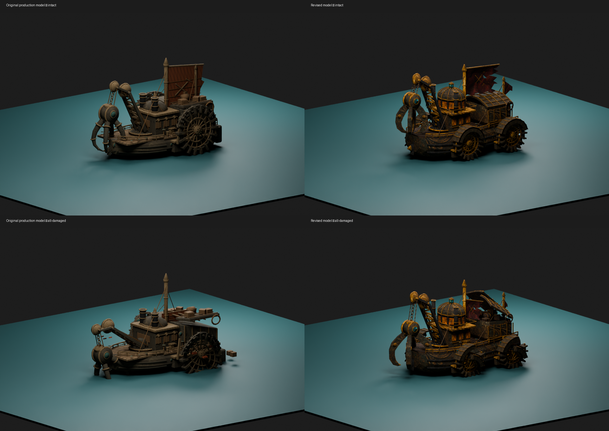
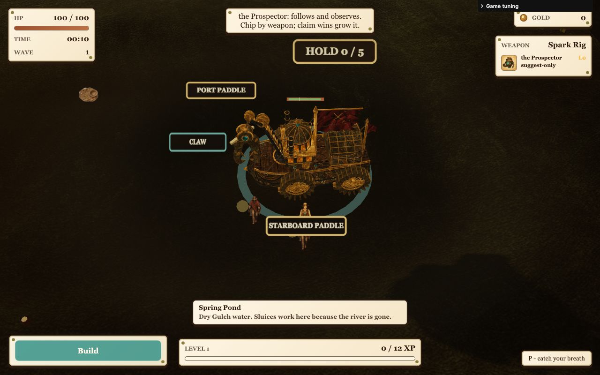
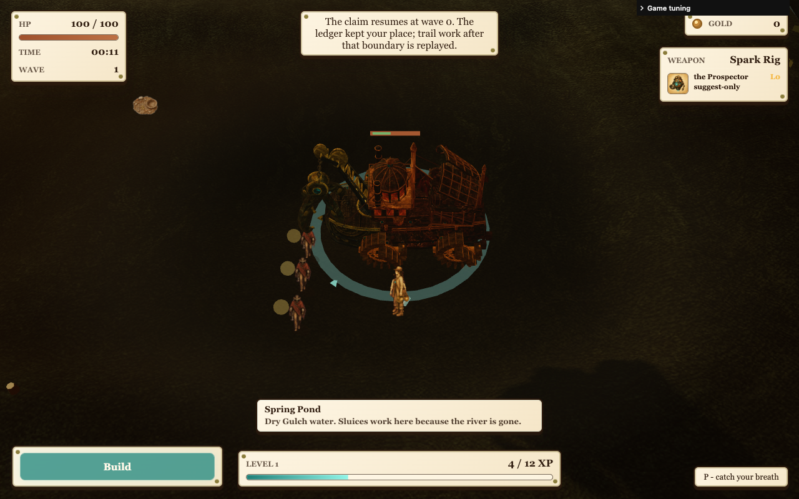
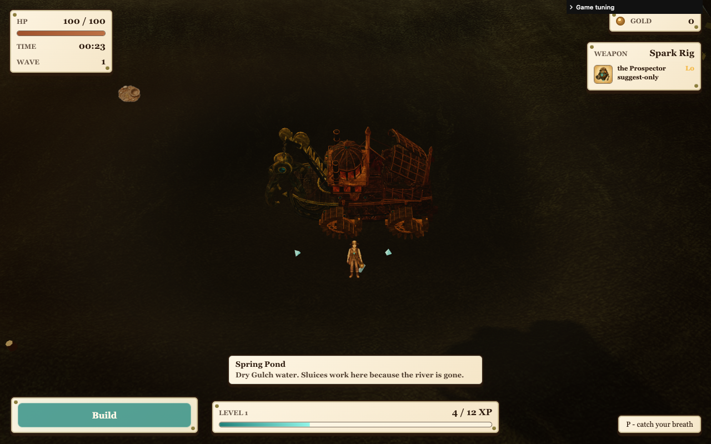
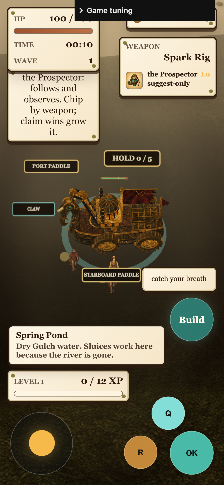
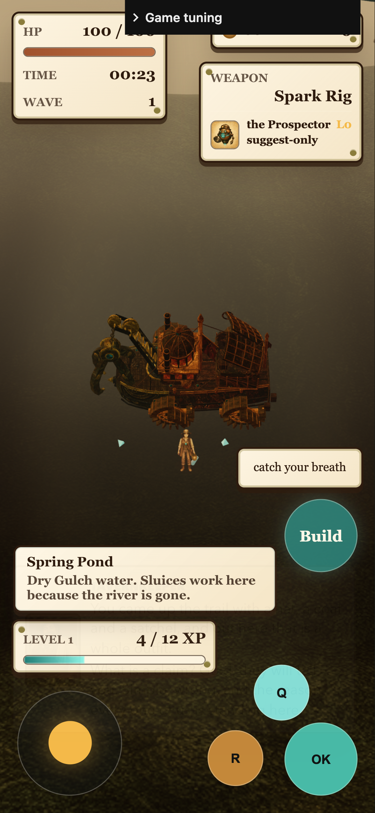

V10 restores the rounded hull, wheelhouse, covered wheels, hanging grab and opening hold. Compact machinery, wheel readability and dark material separation remain limited. Focused checks pass; broad regression is pending.






Independent visual critique and limits · 32 unchanged checks · Reset fix